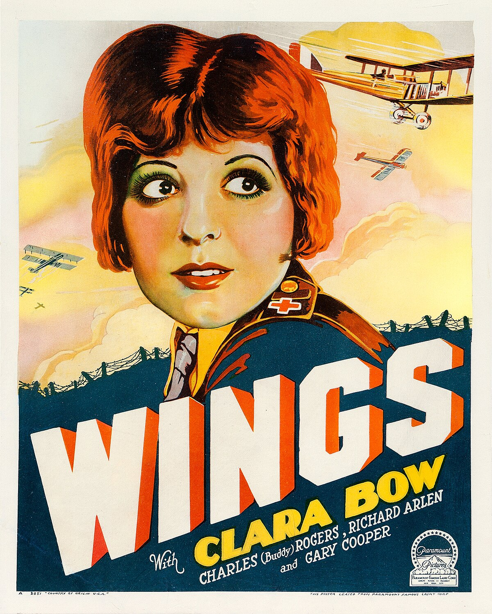

década
1920



Películas destacadas: Wings (1927/28), The Broadway Melody (1928/29)
Este proyecto explora cómo han cambiado los géneros de las películas ganadoras del Oscar a Mejor Película, década a década. A través de collages representativos y una tabla de datos, buscamos entender cómo el contexto sociocultural ha influido en las preferencias cinematográficas de la Academia.
Películas destacadas: Wings (1927/28), The Broadway Melody (1928/29)


Películas destacadas: Lo que el viento se llevó (1939)
Películas destacadas: Los mejores años de nuestra vida (1946)
Películas destacadas: Eva al desnudo (1950)
Películas destacadas: El apartamento (1960)
Películas destacadas: El padrino (1972)
Películas destacadas: Amadeus (1984)
Películas destacadas: Forrest Gump (1994)
Películas destacadas: Chicago (2002)
Películas destacadas: The King's Speech (2010)
Películas destacadas: CODA (2021)